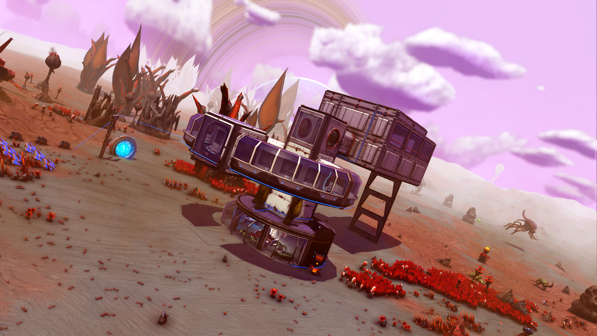

Milliways
The Restaurant at the End of the Universe
Milliways, better known as the Restaurant at the End of the Universe, is a five-star restaurant situated at the end of time and matter. Its main attraction is allowing diners to view a Gnab Gib, before desserts are served.
The Restaurant has some of the most staggeringly extravagant decor ever seen, a variety of the strangest guests from throughout history, and serves a particularly fine Pan Galactic Gargle Blaster. Milliways is run by an incredible arrangement of life forms from everywhen, and is the one place anywhen that serves talking food.
Reservations are easily obtained, since they can be booked once the patron returns to his or her original time after their meal, and the restaurant's bill can be paid by depositing a penny in any bank account of the present time: by the end of the universe, the compound interest on that penny over the course of time after 170 quintillion years (short scale) will be enough to pay the extremely high bill. Near-instant transportation to the restaurant can be achieved in certain rarefied circumstances, such as being next to an exploding hyperspatial field generator on the planet where Milliways will eventually be built several billion years after the explosion occurs. Or have access to a Infinite Improbability Drive, such as The Heart of Gold.